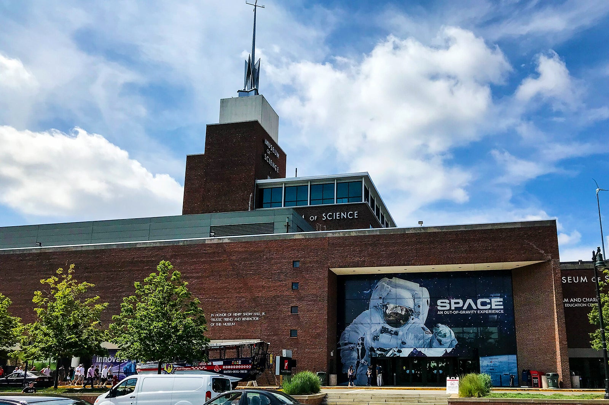
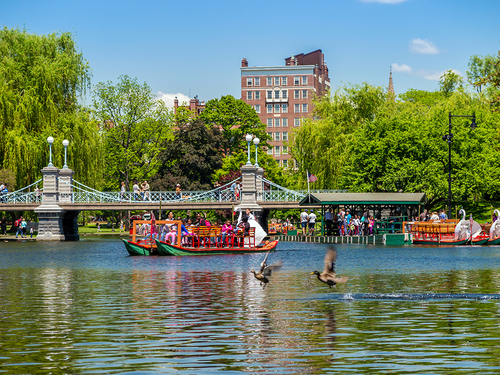
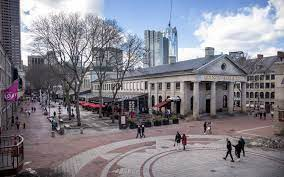

When it comes to things to do; Boston offers all sorts of options for weekend gateaways and weekday excursions. Start planning your trip by looking down below to see some of what Boston has to offer.

Museum of Science
The Museum of Science, located near north point in cambridge, MA, is a site for all ages visiting boston. With family frienedly exhibits, movies, and shows.
Boston Common & Public Garden
At the core of bostons green space experience, is the renown Boston Common & Public Garden. Bothh are peaceful and Beatiful locations where flowers, geese, and other woodland creatures abound. Come here to take a pleasant boat ride arorund the pond.


Faneuil Hall & Quincy Market
If you're looking for a bit of Bostons Revolutionary History, or for a selection from some of Boston's best food options. Then Faneuil Hall and Quincy Market simply must be on your docket.